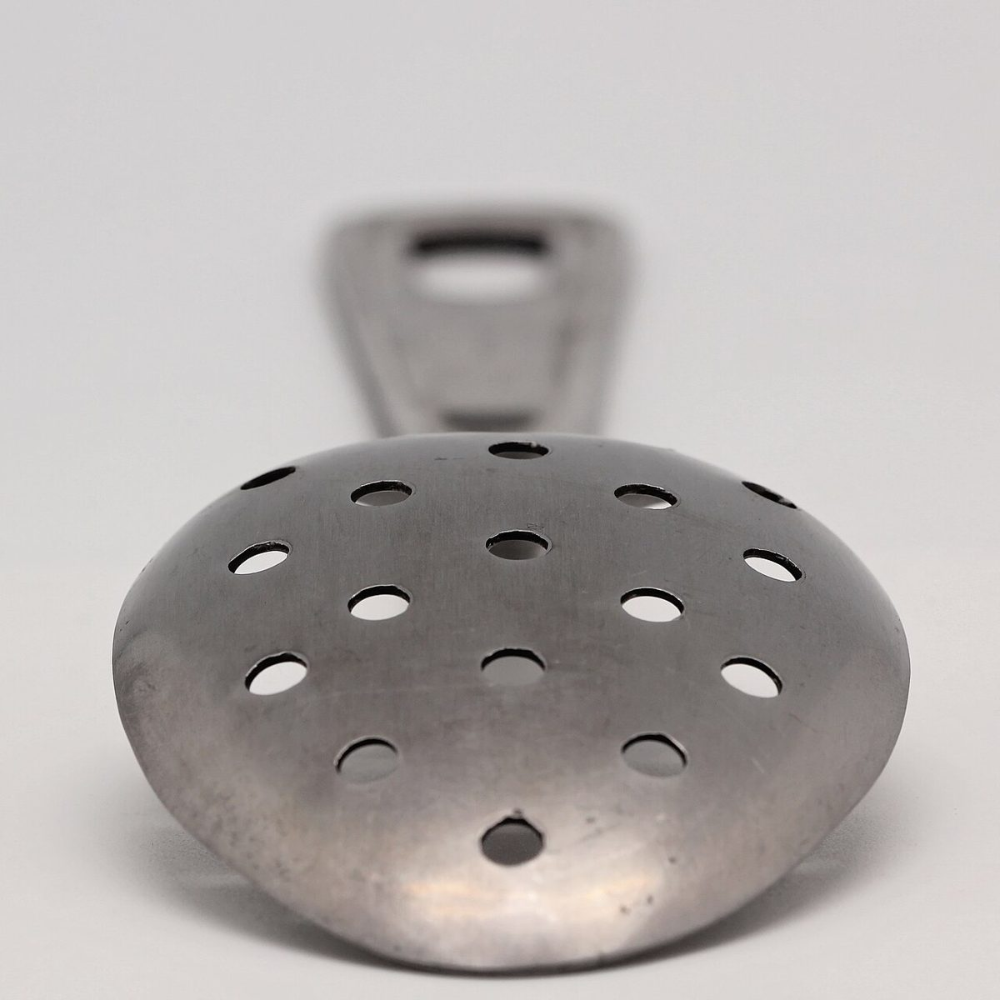
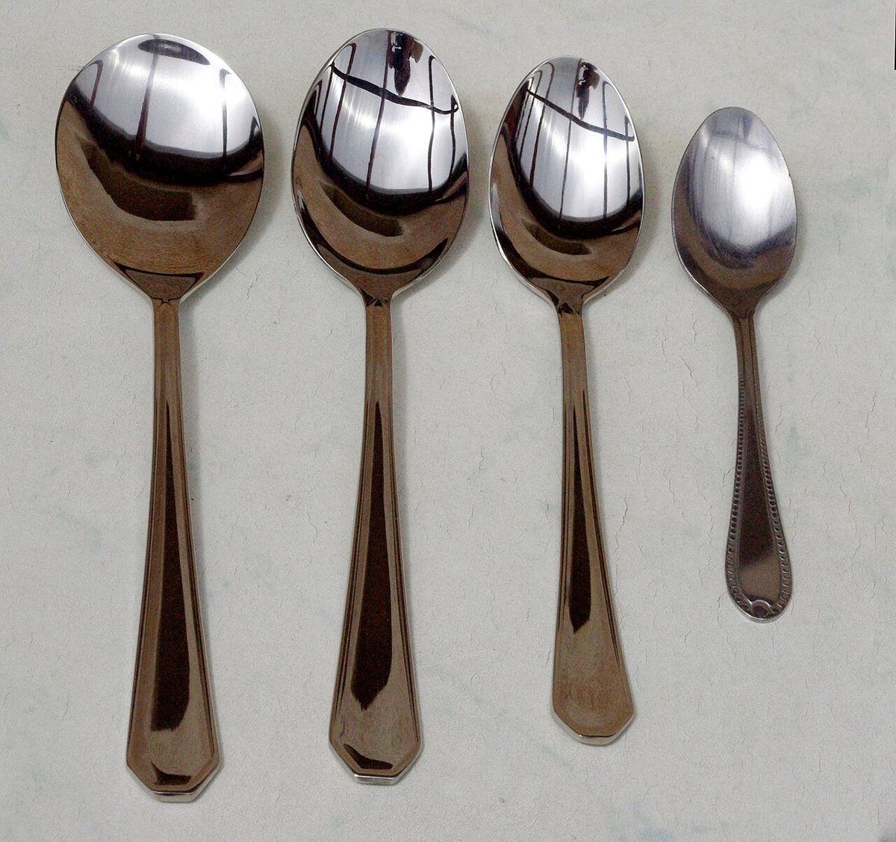

口コミ
なのかな。
お店の情報がまだ少ないので、これから行ってみたい気持ちを、制作側が創作しました。
以下は制作側が考えた創作のイメージ例で、実在のお客様の投稿ではありません。実際の口コミ・評価とは関係ありません。
営業時間などが分かったら、行ってみたいです。それまでは、Instagramの更新を楽しみにしています。
まずはInstagramをのぞいてみたいです。お知らせが載るのを、楽しみに待ちたいです。
営業時間が公開されたら、足を運んでみたいです。いつか行ける日を、のんびり楽しみにしたいです。

